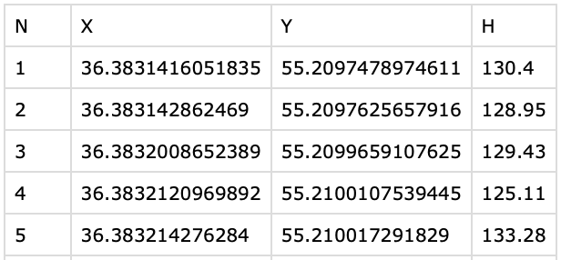

flowchart LR A(Адрес) --> B(Геокодер) C(Адресный локатор) --> B B --> D(Координаты)
Создание объектов и пространственные отношения
Основы геоинформатики. Лекция 2
17 февраля 2023 г.
Автоматическое конструирование
Маршрут — линейный объект
Исходные данные


Simple Feature
Geometry set for 1 feature
Geometry type: LINESTRING
Dimension: XY
Bounding box: xmin: 36.34891 ymin: 55.19607 xmax: 36.38429 ymax: 55.21918
Geodetic CRS: WGS 84
LINESTRING (36.38314 55.20975, 36.38314 55.20976, 36.3832 55.20997, 36.38321 55.21001, 36.38321 55.21002, 36.38325 55.21007...Автоматическое конструирование
Поле — площадной объект
Исходные данные


Simple Feature
Geometry set for 1 feature
Geometry type: POLYGON
Dimension: XY
Bounding box: xmin: 36.37781 ymin: 55.18984 xmax: 36.38543 ymax: 55.19887
Geodetic CRS: WGS 84
POLYGON ((36.38543 55.19842, 36.38538 55.19825, 36.38533 55.19806, 36.38528 55.19785, 36.38525 55.19763, 36.38513 55.19745,...Автоматическое конструирование

Пример использования — построение карт по результатам полевых работ.
Ограничения
Сырые данные ГНСС-измерений содержат погрешности. Поэтому векторные объекты, созданные на их основе, часто нуждаются в редактировании, в том числе с использованием геометрических операций.
Адресное геокодирование
Адресное геокодирование позволяет автоматизировать преобразование текстовых данных в пространственные.
Исходные данные

Результаты геокодирования

Векторизация
Векторизация может осуществляться в автоматическом, автоматизированном и ручном режиме.
Автоматизированная векторизация используется, например, при выделении объектов на космических снимках и сканированных картах. Результирующие объекты требуют редактирования.

Yurtseven и др. (2019)

Векторизация
Векторизация может осуществляться в автоматическом, автоматизированном и ручном режиме.

- Ручная векторизация используется, когда автоматизированные методы не дают удовлетворительного результата, или когда надо создать новый векторный объект, для которого нет образца.
Операции редактирования
Ручная векторизация похожа на работу в векторных графических редакторах. Объекты можно не только создавать, но также разрезать, присоединять, вырезать в них дырки и т.д.
Расстояния
Евклидово расстояние
Используется в плоских прямоугольных системах координат
\[ d(A,B) = \sqrt{(x_A - x_B)^2 + (y_A - y_B)^2} \]
Ограничения
Евклидово расстояние наследует искажения проекции, а также предполагает, что объекты доступны напрямую.

Расстояния
Манхэттенское расстояние
Аппроксимирует реальное расстояние между точками в транспортных сетях с ортогональной планировкой.
\[ d(A,B) = |x_A - x_B| + |y_A - y_B| \]
Ограничения
Даёт преимущества только в том случае когда дорожная сеть ориентирована по направлениям осей \(X\) и \(Y\).

Расстояния
Геодезические расстояние
Кратчайшее расстояние между точками на поверхности эллипсоида. Для сферы:
\[ d(A,B) = \\ \arccos ( \sin \phi_A \sin \phi_B + \\ \cos \phi_A \cos \phi_B \cos(\lambda_A - \lambda_B)) \]

Геодезическая линия и ортодромия
Линия кратчайшего расстояния на эллипсоиде — геодезическая.
Линия кратчайшего расстояния на сфере — ортодромия.
Метрические отношения
Метрические отношения устанавливают расстояния между объектами с использованием выбранной метрики.

Метрики
Для оценки расстояний может использоваться множество других метрик. Они не исчерпываются приведенными примерами.
Топологические отношения
Топологические отношения можно описать в терминах пересечения трех областей каждого объекта (Egenhofer 1991):
Внутренняя область (\(A^o\))
Граница (\(\partial A\))
Внешняя область (\(A^-\))

Матрица Эгенхофера 9-IM содержит 0 или 1 в зависимости от наличия или отсутствия пересечения:
\[ \begin{bmatrix} A^o \cap B^o \ne \emptyset & A^o \cap \partial{B} \ne \emptyset & A^o \cap B^- \ne \emptyset \\ \partial{A} \cap B^o \ne \emptyset & \partial{A} \cap \partial{B} \ne \emptyset & \partial{A} \cap B^- \ne \emptyset \\ A^- \cap B^o \ne \emptyset & A^- \cap \partial{B} \ne \emptyset & A^- \cap B^- \ne \emptyset \end{bmatrix} \]
Топологические отношения
- Не пересекает
-
Внутренняя область и граница A не имеют пересечений с внутренней областью и границей B
\[ \begin{bmatrix} 0 & 0 & \bf{1} \\ 0 & 0 & \bf{1} \\ \bf{1} & \bf{1} & \bf{1} \\ \end{bmatrix} \]
Применение
Используется чтобы установить, что объекты никак не соприкасаются в пространстве.

Топологические отношения
- Равен
-
Границы, внутренние и внешние области A пересекаются с аналогичными элементами B
\[ \begin{bmatrix} \bf{1} & 0 & 0 \\ 0 & \bf{1} & 0 \\ 0 & 0 & \bf{1} \\ \end{bmatrix} \]
Применение
Используется чтобы установить, что объекты совпадают.

Топологические отношения
- Перекрывает
-
Все компоненты A пересекаются со всеми компонентами B
\[ \begin{bmatrix} \bf{1} & \bf{1} & \bf{1} \\ \bf{1} & \bf{1} & \bf{1} \\ \bf{1} & \bf{1} & \bf{1} \\ \end{bmatrix} \]
Применение
Используется чтобы установить, что объекты имеют частичное перекрытие.

Топологические отношения
- Касается
-
Внутренняя область и граница A не пересекатся с внутренней областью B и наоборот.
\[ \begin{bmatrix} 0 & 0 & \bf{1} \\ 0 & \bf{1} & \bf{1} \\ \bf{1} & \bf{1} & \bf{1} \\ \end{bmatrix} \]
Применение
Используется чтобы установить, что объекты касаются друг друга снаружи.

Топологические отношения
- Покрывает
-
Внешняя область A не пересекается с границей и внутренней областью B, а граница A не пересекается с внутренней областью B.
\[ \begin{bmatrix} \bf{1} & \bf{1} & \bf{1} \\ 0 & \bf{1} & \bf{1} \\ 0 & 0 & \bf{1} \\ \end{bmatrix} \]
Применение
Используется чтобы установить, что один объект содержит внутри себя другой объект, который касается его границы.

Топологические отношения
- Покрыт
-
Внешняя область B не пересекается с границей и внутренней областью A, а граница B не пересекается с внутренней областью A.
\[ \begin{bmatrix} \bf{1} & 0 & 0 \\ \bf{1} & \bf{1} & 0 \\ \bf{1} & \bf{1} & \bf{1} \\ \end{bmatrix} \]
Применение
Используется чтобы установить, что один объект содержится внутри другого объекта и касается его границы.

Топологические отношения
- Содержит
-
Внешняя область и граница A не пересекается с границей и внутренней областью B, остальные пересечения присутствуют.
\[ \begin{bmatrix} \bf{1} & \bf{1} & \bf{1} \\ 0 & 0 & \bf{1} \\ 0 & 0 & \bf{1} \\ \end{bmatrix} \]
Применение
Используется чтобы установить, что один объект содержит внутри себя другой объект.

Топологические отношения
- Внутри
-
Внешняя область и граница B не пересекается с границей и внутренней областью A, остальные пересечения присутствуют.
\[ \begin{bmatrix} \bf{1} & 0 & 0 \\ \bf{1} & 0 & 0 \\ \bf{1} & \bf{1} & \bf{1} \\ \end{bmatrix} \]
Применение
Используется чтобы установить, что один объект содержится внутри другого объекта.

Топологические отношения
- Пересекает
-
Внутренняя область или граница A пересекается с внутренней областью или границей B.

Дирекционные отношения
Угловая модель базируется на вычислении угла направления с точки A в точку B.
- Как правило используется дирекционный угол или азимут.
Ограничения
Применима только для точечных объектов

Дирекционные отношения
Прямоугольная модель разделяет плоскость на 9 секторов относительно прямоугольника, ограничивающего объект.
- Используется минимальный ограничивающий прямоугольник со сторонами, параллельными осям координат.
Ограничения
Дает качественную оценку направления по сторонам света

Дирекционные отношения
Проективная модель используется для оценки направления на третий объект C относительно двух других объектов A и B.
- Плоскость делится на 4 “конуса”, а также область между объектами.
Ограничения
Дает качественную оценку направления и применяется для движущихся объектов

Сайт курса